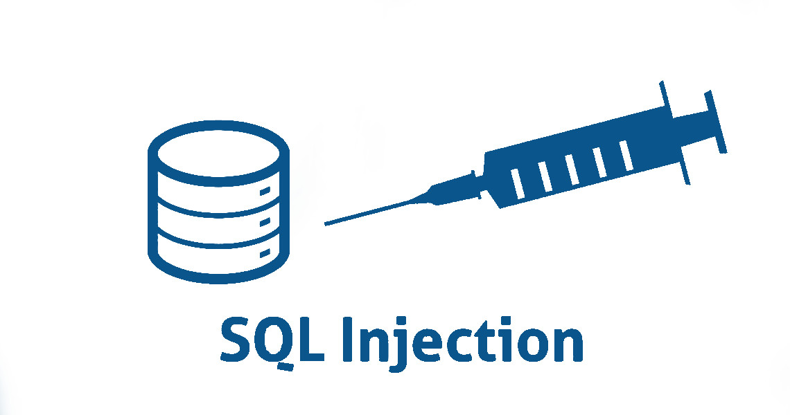
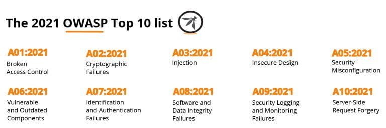
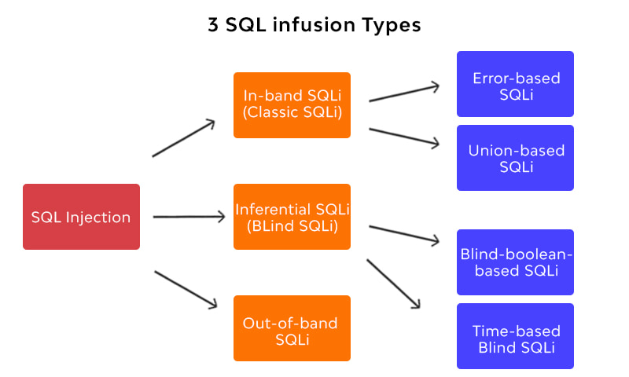
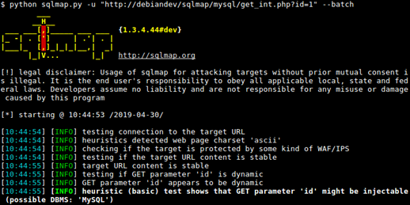

SQL bir web sitenin veri tabanındaki verileri yönetmeye, tasarlamaya ve düzenlemeye yarayan bir program dilidir. Günümüzdeki çoğu web sitelerinin SQL dilinin yaratmış olduğu açıklar sayesinde güvenli olmadığı tahmin edilmektedir. Bu yüzden Açık Web Uygulaması Güvenlik Projesi (AWUGP) kapsamında, SQL injection en yaygın web hackleme tekniği olarak kabul edilir.
Web sitelerinin bütün bilgileri web sitenin veri tabanında yer alır. SQL injection, veri tabanınızı tahrip edebilecek kötü amaçlı bir saldırı yöntemidir. SQL injection sayesinde web sitesine saldıran saldırganlar web sitesindeki kullanıcı bilgilerini çalabilir, gizlenmiş bilgilere ulaşabilir, mevcut verilere müdahale edebilir, bazı işlemeleri değiştirebilir ve veri tabanını komple silebilir.

SQL İnjection Türleri

1.Klasik SQL İnjection
Sql injection saldırlarının en yaygın ve kullanımı kolay olandır. Bir saldırgan hem saldırıyı başlatmak hem de sonuçları toplamak için aynı iletişim kanalını kullanır.
2.Blind SQL İnjection
İsminden de anlaşılacağı üzere kör atış yapılan bir SQL injection saldırısıdır. Blind sql injection açığı bulunan bir sistemde veri tabanındaki tablo isimleri, kolonlar direkt olarak görünmez. Bu saldırıyı gerçekleştirmenin en bilindik yolu sistemdeki kolon isimlerini harf harf deneyerek bulmaktır.
3.Out-of-band SQL İnjection
Bu teknik çok yaygın değildir, çünkü çoğunlukla web uygulaması tarafından kullanılan veri tabanı sunucusunda etkinleştirilen bazı özelliklere bağlıdır. Bu saldırıda saldırgan, saldırıyı başlatmak ve sonuçları toplamak için aynı kanalı kullanmadığında oluşur. Out-of-band teknikleri, bir saldırgana özellikle de sunucu yanıtları çok kararlı olmadığı zamanlarda, inferential time-based tekniklere bir alternatif sunar. Out-of-band SQL injection teknikleri, veri tabanı sunucusunun bir saldırgana veri sağlamak için DNS veya HTTP talepleri yapma becerisine dayanır.
SQL İnjection Nasıl Bulunur ?
SQL injection bir sitede aranıp bulunurken script kiddle seviyesindeki saldırganların bile bildiği bir şey vardır. Arama kutularına ‘(tırnak) işareti koymak. Bu tür özel karakterler form girdilerine denenerek sayfada veri tabanı hatası almaya çalışılır. Böylelikle SQL açığı olup olmadığı manuel bir şekilde aranmış olur. Bu manuel arama tekniği oldukça zahmetlidir.
Sitelerde SQL açığının aranması için özel araçlar üretilmiştir. Bunlardan en yaygını SQLMap’tır. Sqlmap veri tabanın kullanıcılarını, parolalarını, hash değerlerini, roller, tabloları, sütunları gibi bilgileri tespit eder.

Sqlmap, açık kaynaklı bir yazılımdır. Kali Linux işletim sistemine sahipseniz halihazırda kurulu olarak gelir. Bunun yanında Acunetix, Netsparker, Vega gibi bilgi toplama araçları SQL açığı aranırken kullanılabilir.
DVWA’yı açıp SQL Injection sekmesine geldiğimizde kullanıcı ID değerlerinden hangisini aratırsak onu bulan bir form kutusuna rastlıyoruz. Kaynak kodunu incelediğimizde bizim veri tabanına istediğimiz komutu göndermemizi engelleyecek bir kontrol mekanizmasına rastlamıyoruz. Form kutusunun yaptığı işlem veri tabanına:
>SELECT first_name, last_name FROM users WHERE user_id=’(girdiğimiz sayı)’
Gibi bir komut göndermek. Sayı girdiğimiz kısıma kendi SQL komutumuzu gönderirsek veri tabanında istediğimiz bilgilere ulaşırız.
SQL İnjection Nasıl Önlenir ?
SQL injection saldırılarının gerçekleşmesini önlemenin yanı sıra, bunlara karşı korunmanın birkaç etkili yolu vardır.
1.Dinamik SQL kullanmayın. Parametre göndererek veya Store Procedure kullanın.
2.Kullanıcı tarafından sağlanan girdilerin kontrol edilmeli. Tüm TextBox girişlerinin değerlerini Validator Kontrolleri, Regular Expressions veya kod ile kontrol edin.
3.Hassas verileri düz metin olarak bırakmayın. Verilerinizi şifreleme algoritması kullanarak veri tabanına kaydedin.
4.Veri tabanına asla admin düzeyinde bağlanmayın. Veri tabanına gerekli düzeyde kısıtlı erişim ile bağlanın.
5.Veri tabanı hatalarını doğrudan kullanıcıya göstermekten kaçının. Meydana gelebilecek her hataya karşı özel bir hata sayfası hazırlayın.
Okuduğunuz için teşekkürler :)